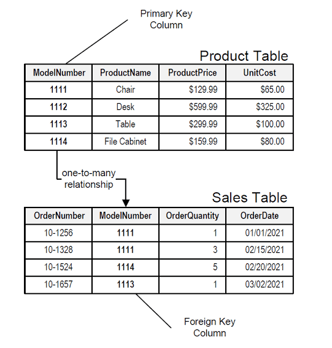

SQL 101 | Chapter 1: Understanding SQL and Databases

In the world of information technology, databases are the backbone of virtually every application and system. They serve as efficient repositories of structured data, enabling businesses to store, manage, and retrieve vast amounts of information with ease. To interact with these databases, we rely on a powerful and versatile language known as SQL (Structured Query Language).
In this article:


In this article, we will delve into the fundamentals of SQL and databases, exploring key concepts such as relational databases, tables, rows, and columns.
What is SQL?

SQL, short for Structured Query Language, is a domain-specific language used for managing and manipulating data in relational databases. It was first introduced in the early 1970s by IBM researchers, and since then, it has become the standard language for working with databases across various platforms and systems.
SQL allows users to interact with databases using simple yet powerful commands. These commands can perform a wide range of operations, such as retrieving data, inserting new records, updating existing information, and deleting unwanted entries. Whether you are a database administrator, a software developer, or a data analyst, a solid understanding of SQL is indispensable for efficiently handling data.
Relational Databases

A relational database is a type of database that organizes and stores data in a structured manner, based on the principles of the relational model. Introduced by Dr. Edgar F. Codd in 1970, the relational model represents data in the form of tables, each comprising rows and columns.
The beauty of a relational database lies in its ability to establish relationships between tables. These relationships define how data in one table is related to data in another, facilitating efficient data retrieval and minimizing data duplication. As a result, relational databases are widely used in various applications, from small-scale projects to large enterprise systems.
Key Concepts: Tables, Rows, and Columns
In the context of SQL and databases, it’s essential to grasp the key concepts of tables, rows, and columns.

Tables: A table, that represents an entity, is a fundamental building block of a relational database. It represents a collection of related data organized into rows and columns. Each table in a database has a unique name and a predefined structure, which specifies the fields or attributes it contains.
Rows: Also known as records or tuples, rows represent individual entries in a table. Each row contains data related to a specific entity or item. For example, in a database for an online store, each row in the “Sales” table could represent a different sale of a product.
Columns: Columns, on the other hand, are the vertical components of a table. They define the attributes or properties of the data being stored. For the “Product” table example, the columns could include attributes such as “ModelNumber,” “ProductName,” “ProductPrice,” and “UnitCost.”
Together, these three elements form the core structure of a relational database, providing a systematic way to organize and access data efficiently.
Conclusion
SQL is the language that empowers developers and database administrators to interact with relational databases seamlessly. Understanding its core concepts, such as tables, rows, and columns, is crucial for anyone working with data in the IT industry.
In this article, we have explored the fundamentals of SQL and the principles behind relational databases. In the next chapter, we will set up our environment to practice hands-on SQL, allowing us to apply the knowledge gained and take our database skills to the next level. Happy querying and let the SQL adventures begin!